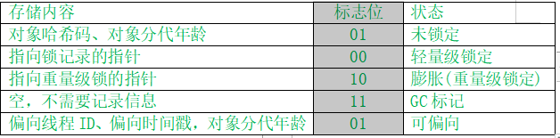

<!DOCTYPE html>


<html lang="zh-CN">


<head>
  <meta charset="utf-8" />
    
  <meta name="viewport" content="width=device-width, initial-scale=1, maximum-scale=1" />
  <title>
    Java中的锁-synchronized |  愿那颗星一直指引你
  </title>
  <meta name="generator" content="hexo-theme-ayer">
  
  <link rel="shortcut icon" href="/favicon.ico" />
  
  
<link rel="stylesheet" href="/dist/main.css">

  
<link rel="stylesheet" href="https://cdn.jsdelivr.net/gh/Shen-Yu/cdn/css/remixicon.min.css">

  
<link rel="stylesheet" href="/css/custom.css">

  
  
<script src="https://cdn.jsdelivr.net/npm/pace-js@1.0.2/pace.min.js"></script>

  
  

  

</head>

</html>

<body>
  <div id="app">
    <main class="content on">
      <section class="outer">
  <article id="post-Java中的锁-synchronized" class="article article-type-post" itemscope
  itemprop="blogPost" data-scroll-reveal>

  <div class="article-inner">
    
    <header class="article-header">
       
<h1 class="article-title sea-center" style="border-left:0" itemprop="name">
  Java中的锁-synchronized
</h1>
 

    </header>
    

    
    <div class="article-meta">
      <a href="/2020/06/10/Java%E4%B8%AD%E7%9A%84%E9%94%81-synchronized/" class="article-date">
  <time datetime="2020-06-10T13:10:43.000Z" itemprop="datePublished">2020-06-10</time>
</a>
      
  <div class="article-category">
    <a class="article-category-link" href="/categories/Java%E5%B9%B6%E5%8F%91/">Java并发</a>
  </div>

      
      
<div class="word_count">
    <span class="post-time">
        <span class="post-meta-item-icon">
            <i class="ri-quill-pen-line"></i>
            <span class="post-meta-item-text"> 字数统计:</span>
            <span class="post-count">2.4k</span>
        </span>
    </span>

    <span class="post-time">
        &nbsp; | &nbsp;
        <span class="post-meta-item-icon">
            <i class="ri-book-open-line"></i>
            <span class="post-meta-item-text"> 阅读时长≈</span>
            <span class="post-count">8 分钟</span>
        </span>
    </span>
</div>

      
    </div>
    

    
    
    <div class="tocbot"></div>


    

    
    <div class="article-entry" itemprop="articleBody">
      
      

      
      <p>之前的文章主要结合例子介绍了一些概念性的东西，比如JMM，并发的三大问题等。</p>
<p>本文主要介绍的是Java中的synchronized关键字，从使用入手，慢慢阐述其实现原理以及使用时候等注意事项。</p>
<a id="more"></a>

<h1 id="Java中的锁机制"><a href="#Java中的锁机制" class="headerlink" title="Java中的锁机制"></a>Java中的锁机制</h1><p>Java中的锁有很多，按照功能、种类进行分类，主要包括以下几种：</p>
<ol>
<li>从线程是否需要对资源加锁可以分为 <strong>悲观锁</strong> 和 <strong>乐观锁</strong>。</li>
<li>从锁的公平性进行区分，可以分为 <strong>公平锁</strong> 和 <strong>非公平锁</strong>。</li>
<li>从根据锁是否重复获取可以分为 可 <strong>重入锁</strong> 和 <strong>不可重入锁</strong>。</li>
<li>从多个线程能否获取同一把锁分为 <strong>共享锁</strong> 和 <strong>排他锁</strong>。</li>
</ol>
<p>而Java中的锁的具体实现主要有JVM提供的关键字synchronized和Java并发包下基于AQS的Lock。</p>
<p>本文中介绍的synchronized如果按照上面的分类的话，应当属于 <strong>悲观锁</strong>、<strong>非公平锁</strong>、<strong>重入锁</strong>、<strong>排他锁</strong>。</p>
<h1 id="synchronized如何使用"><a href="#synchronized如何使用" class="headerlink" title="synchronized如何使用"></a>synchronized如何使用</h1><p>首先，我们来看看synchronized如何使用的。synchronized实现同步的基础是：Java中的每一个对象都可以作为锁。在使用的时候，主要有以下几种使用方式：</p>
<ol>
<li>修饰实例方法，作用于当前对象实例加锁，进入同步代码前要获得当前对象实例的锁<figure class="highlight java"><table><tr><td class="gutter"><pre><span class="line">1</span><br><span class="line">2</span><br><span class="line">3</span><br></pre></td><td class="code"><pre><span class="line"><span class="function"><span class="keyword">public</span> <span class="keyword">synchronized</span> <span class="keyword">void</span> <span class="title">xxx</span><span class="params">()</span></span>&#123;</span><br><span class="line">        <span class="comment">//省略号</span></span><br><span class="line">    &#125;</span><br></pre></td></tr></table></figure></li>
<li>修饰静态方法，作用于当前类对象加锁，进入同步代码前要获得this当前类对象的锁<figure class="highlight java"><table><tr><td class="gutter"><pre><span class="line">1</span><br><span class="line">2</span><br><span class="line">3</span><br></pre></td><td class="code"><pre><span class="line"><span class="function"><span class="keyword">public</span> <span class="keyword">static</span> <span class="keyword">synchronized</span> <span class="keyword">void</span> <span class="title">xxx</span><span class="params">()</span></span>&#123;</span><br><span class="line">        <span class="comment">//省略号</span></span><br><span class="line">    &#125;</span><br></pre></td></tr></table></figure></li>
<li>修饰代码块，指定加锁对象，对给定对象加锁，进入同步代码块前要获得给定对象的锁<figure class="highlight java"><table><tr><td class="gutter"><pre><span class="line">1</span><br><span class="line">2</span><br><span class="line">3</span><br><span class="line">4</span><br><span class="line">5</span><br><span class="line">6</span><br></pre></td><td class="code"><pre><span class="line">Object lock=<span class="keyword">new</span> Object();</span><br><span class="line"></span><br><span class="line"><span class="keyword">synchronized</span> (lock)&#123;</span><br><span class="line">    <span class="comment">//省略号</span></span><br><span class="line"></span><br><span class="line">&#125;</span><br></pre></td></tr></table></figure>
当一个线程试图访问同步代码块或者同步方法时，它必须先得到锁，退出或者抛出异常时必须释放锁。</li>
</ol>
<p>现在我们从三大问题的角度来看，结合Java内存模型，看看synchronized是如何解决的：</p>
<ul>
<li>内存可见性：在进入同步代码块或者同步方法时，线程需要获取锁，JMM会把线程对应的工作内存置为无效。从而使得后续的共享变量必须从主内存中读取；在锁释放的时候，JMM会把线程对应的本地内存中的共享变量刷新到主内存中去。由于synchronized是排他锁，同一时刻，只有一个相关线程可以拿到对象上的锁，所以当每个线程执行时都会得到最新的变量，而执行完成后都会刷新主内存，因此能保证内存的可见性。</li>
<li>原子性：同步代码块或者同步方法的原子性是对整个方法而言的，并且同步代码原子性的保证，来自于其排他锁的性质。</li>
<li>重排序：同步代码块或者同步方法能够保证同步区域中的代码不跑到临界区外，但是不能保证同步区域内的代码不发生重排序），如果说同步区域内的代码重排序，不影响后续线程的执行结果，那还好。但一旦出现这种情况，那么隐患还是相当大的，比如说单例模式的双重检查锁，需要靠volatile来修饰变量防止重排序。<h1 id="Mark-Word"><a href="#Mark-Word" class="headerlink" title="Mark Word"></a>Mark Word</h1>之前说了很久的锁，那么Java中的对象锁是如何实现的？或者说，锁到底存放在哪里？</li>
</ul>
<p>在《深入理解Java虚拟机》中，我们可以知道，对象在内存中的布局分为三块区域：对象头、实例数据和对齐填充。Hotspot虚拟机的对象头主要包括两部分数据：Mark Word（标记字段）、Class Pointer（类型指针），数组会多1字段(32位: 4字节)来存储数组长度。</p>
<p>synchronized用到的锁就是存在Java对象头当中的。其中Klass Point是对象指向它的类元数据的指针，虚拟机通过这个指针来确定这个对象是哪个类的实例；Mark Word用于存储对象自身的运行时数据，它是实现轻量级锁和偏向锁的关键。</p>
<p>Mark Word主要用来存储对象自身的运行时数据，如hashcode、gc分代年龄、锁状态标志、线程持有的锁、偏向线程ID、偏向时间戳等等。<br><br></p>
<p>在运行期间，Mark Word里存储的数据会随着锁标志位的变化而变化。我们来看看它具体的结构和状态变化</p>
<p></p>
<h1 id="Monitor机制"><a href="#Monitor机制" class="headerlink" title="Monitor机制"></a>Monitor机制</h1><p>在了解了锁的概念后，Java中又是如何实现同步获取锁的呢？这不得不提到Monitor机制，Monitor其实是一种同步工具、同步机制，在Java中，Object 类本身就是监视者对象，Java 对于 Monitor Object 模式做了内建的支持，即每一个Java对象是一个的Monitor。并且同时只能有一个线程可以获得该对象monitor的所有权。在线程进入时通过monitorenter尝试取得对象monitor所有权，退出时通过monitorexit释放对象monitor所有权。</p>
<ul>
<li><strong>monitorenter</strong> 过程如下：<br><br>如果monitor的进入数为0，则该线程进入monitor，然后将进入数设置为1，该线程即为monitor的所有者；<br>如果线程已经占有monitor，只是重新进入，则monitor的进入数+1（这也是重入锁的实现原理）；<br>如果其他线程已经占用monitor，则该线程处于阻塞状态，直至monitor的进入数为0，再重新尝试获得monitor的所有权。</li>
<li><strong>monitorexit</strong> 过程如下：<br><br>执行monitorexit的线程必须是 object 所对应的monitor的所有者。执行指令时，monitor的进入数减1，如果减1后进入数为0，则线程退出 monitor，不再是这个monitor的所有者，其他被这个monitor阻塞的线程可以尝试获取这个monitor的所有权。<h1 id="锁的底层优化"><a href="#锁的底层优化" class="headerlink" title="锁的底层优化"></a>锁的底层优化</h1>在Java早期版本中，synchronized属于重量级锁，效率低下，因为monitor是依赖于底层的操作系统的Mutex Lock来实现的，Java的线程是映射到操作系统的原生线程之上的。如果要挂起或者唤醒一个线程，都需要操作系统帮忙完成，而操作系统实现线程之间的切换时需要从用户态转换到内核态，这个状态之间的转换需要相对比较长的时间，时间成本相对较高，这也是为什么早期的synchronized效率低的原因。</li>
</ul>
<p>JDK1.6对锁的实现引入了大量的优化，如偏向锁、轻量级锁、自旋锁、适应性自旋锁、锁消除、锁粗化等技术来减少锁操作的开销。</p>
<h2 id="锁升级"><a href="#锁升级" class="headerlink" title="锁升级"></a>锁升级</h2><h3 id="偏向锁"><a href="#偏向锁" class="headerlink" title="偏向锁"></a>偏向锁</h3><p>偏向锁主要用来优化同一线程多次申请同一个锁的竞争，在某些情况下，大部分时间都是同一个线程竞争锁资源。<br><br><strong>偏向锁的作用</strong><br><br>当一个线程再次访问同一个同步代码时，该线程只需对该对象头的Mark Word中去判断是否有偏向锁指向它<br>无需再进入Monitor去竞争对象（避免用户态和内核态的切换）</p>
<h3 id="轻量级锁"><a href="#轻量级锁" class="headerlink" title="轻量级锁"></a>轻量级锁</h3><p>当有另外一个线程竞争锁时，由于该锁处于偏向锁状态<br><br>发现对象头Mark Word中的线程ID不是自己的线程ID，该线程就会执行CAS操作获取锁<br><br>如果获取成功，直接替换Mark Word中的线程ID为自己的线程ID，该锁会保持偏向锁状态<br><br>如果获取失败，说明当前锁有一定的竞争，将偏向锁升级为轻量级锁,当前线程会尝试自旋一定次数来获取锁。</p>
<h3 id="重量级锁"><a href="#重量级锁" class="headerlink" title="重量级锁"></a>重量级锁</h3><p>当竞争激烈，在轻量级锁自旋一定次数仍获取不到锁时，将会进入重量级锁的形态。如果在获取不到锁，线程将阻塞在moniter的waitSet中。<br><br>monitor监视器锁本质上是依赖操作系统的Mutex Lock互斥量 来实现的，我们一般称之为重量级锁。因为OS实现线程间的切换需要从用户态转换到内核态，这个转换过程成本较高，耗时相对较长，因此synchronized效率会比较低。</p>
<h2 id="其他优化"><a href="#其他优化" class="headerlink" title="其他优化"></a>其他优化</h2><h3 id="锁消除"><a href="#锁消除" class="headerlink" title="锁消除"></a>锁消除</h3><p>锁消除理解起来很简单，它指的就是虚拟机即使编译器在运行时，如果检测到那些共享数据不可能存在竞争，那么就执行锁消除。锁消除可以节省毫无意义的请求锁的时间。</p>
<h3 id="锁粗化"><a href="#锁粗化" class="headerlink" title="锁粗化"></a>锁粗化</h3><p>锁粗化就是 JVM 检测到一串零碎的操作都对同一个对象加锁，则会把加锁同步的范围粗化到整个操作序列的外部。</p>
<h1 id="注意事项"><a href="#注意事项" class="headerlink" title="注意事项"></a>注意事项</h1><p>synchronized虽然能解决并发问题，但是也不能乱用。一方面过多的加锁会影响系统的性能，如果只需要保证内存可见性的话，用volatile效率会更高；另一方面如果锁加的不规范可能会导致死锁的发生。</p>
<h1 id="小结"><a href="#小结" class="headerlink" title="小结"></a>小结</h1><p>synchronized是Java中十分重要的一个关键字，在此与大家分享下我的学习成果，如果有不对的地方，还请多多指正。</p>

      
      <!-- reward -->
      
    </div>
    
    
      <!-- copyright -->
      
        <div class="declare">
          <ul class="post-copyright">
            <li>
              <i class="ri-copyright-line"></i>
              <strong>版权声明： </strong>
              本博客所有文章除特别声明外，著作权归作者所有。转载请注明出处！
            </li>
          </ul>
        </div>
        
    <footer class="article-footer">
      
          
<div class="share-btn">
      <span class="share-sns share-outer">
        <i class="ri-share-forward-line"></i>
        分享
      </span>
      <div class="share-wrap">
        <i class="arrow"></i>
        <div class="share-icons">
          
          <a class="weibo share-sns" href="javascript:;" data-type="weibo">
            <i class="ri-weibo-fill"></i>
          </a>
          <a class="weixin share-sns wxFab" href="javascript:;" data-type="weixin">
            <i class="ri-wechat-fill"></i>
          </a>
          <a class="qq share-sns" href="javascript:;" data-type="qq">
            <i class="ri-qq-fill"></i>
          </a>
          <a class="douban share-sns" href="javascript:;" data-type="douban">
            <i class="ri-douban-line"></i>
          </a>
          <!-- <a class="qzone share-sns" href="javascript:;" data-type="qzone">
            <i class="icon icon-qzone"></i>
          </a> -->
          
          <a class="facebook share-sns" href="javascript:;" data-type="facebook">
            <i class="ri-facebook-circle-fill"></i>
          </a>
          <a class="twitter share-sns" href="javascript:;" data-type="twitter">
            <i class="ri-twitter-fill"></i>
          </a>
          <a class="google share-sns" href="javascript:;" data-type="google">
            <i class="ri-google-fill"></i>
          </a>
        </div>
      </div>
</div>

<div class="wx-share-modal">
    <a class="modal-close" href="javascript:;"><i class="ri-close-circle-line"></i></a>
    <p>扫一扫，分享到微信</p>
    <div class="wx-qrcode">
      
    </div>
</div>

<div id="share-mask"></div>
      
      
  <ul class="article-tag-list" itemprop="keywords"><li class="article-tag-list-item"><a class="article-tag-list-link" href="/tags/Java%E5%B9%B6%E5%8F%91/" rel="tag">Java并发</a></li></ul>


    </footer>

  </div>

  
  
  <nav class="article-nav">
    
    
      <a href="/2020/05/25/%E8%AE%B0%E4%B8%80%E4%B8%8B%E8%BF%99%E6%AE%B5%E6%97%B6%E9%97%B4%E7%9A%84%E6%84%9F%E5%8F%97/" class="article-nav-link">
        <strong class="article-nav-caption">下一篇</strong>
        <div class="article-nav-title">记一下这段时间的感受</div>
      </a>
    
  </nav>


  

  
  
<!-- valine评论 -->
<div id="vcomments-box">
    <div id="vcomments">
    </div>
</div>
<script src="//cdn1.lncld.net/static/js/3.0.4/av-min.js"></script>
<script src='https://cdn.jsdelivr.net/npm/valine@1.3.10/dist/Valine.min.js'></script>
<script>
    new Valine({
        el: '#vcomments',
        app_id: '',
        app_key: '',
        path: window.location.pathname,
        notify: 'false',
        verify: 'false',
        avatar: 'monsterid',
        placeholder: '给我的文章加点评论吧~',
        recordIP: true
    });
    const infoEle = document.querySelector('#vcomments .info');
    if (infoEle && infoEle.childNodes && infoEle.childNodes.length > 0) {
        infoEle.childNodes.forEach(function (item) {
            item.parentNode.removeChild(item);
        });
    }
</script>
<style>
    #vcomments-box {
        padding: 5px 30px;
    }

    @media screen and (max-width: 800px) {
        #vcomments-box {
            padding: 5px 0px;
        }
    }

    #vcomments-box #vcomments {
        background-color: #fff;
    }

    .v .vlist .vcard .vh {
        padding-right: 20px;
    }

    .v .vlist .vcard {
        padding-left: 10px;
    }
</style>

  

  
  
  
  
  

</article>
</section>
      <footer class="footer">
  <div class="outer">
    <ul>
      <li>
        Copyrights &copy;
        2020
        <i class="ri-heart-fill heart_icon"></i> Hanyu
      </li>
    </ul>
    <ul>
      <li>
        
      </li>
    </ul>
    <ul>
      <li>
        
        
        <span>
  <span><i class="ri-user-3-fill"></i>访问人数:<span id="busuanzi_value_site_uv"></span></s>
  <span class="division">|</span>
  <span><i class="ri-eye-fill"></i>浏览次数:<span id="busuanzi_value_page_pv"></span></span>
</span>
        
      </li>
    </ul>
    <ul>
      
    </ul>
    <ul>
      <li>
        <!-- cnzz统计 -->
        
        <script type="text/javascript" src='https://s9.cnzz.com/z_stat.php?id=1278069914&amp;web_id=1278069914'></script>
        
      </li>
    </ul>
  </div>
</footer>
      <div class="float_btns">
        <div class="totop" id="totop">
  <i class="ri-arrow-up-line"></i>
</div>

      </div>
    </main>
    <aside class="sidebar on">
      <button class="navbar-toggle"></button>
<nav class="navbar">
  
  <div class="logo">
    <a href="/"></a>
  </div>
  
  <ul class="nav nav-main">
    
    <li class="nav-item">
      <a class="nav-item-link" href="/">主页</a>
    </li>
    
    <li class="nav-item">
      <a class="nav-item-link" href="/archives">归档</a>
    </li>
    
    <li class="nav-item">
      <a class="nav-item-link" href="/categories">分类</a>
    </li>
    
    <li class="nav-item">
      <a class="nav-item-link" href="/tags">标签</a>
    </li>
    
    <li class="nav-item">
      <a class="nav-item-link" href="/about">关于我</a>
    </li>
    
  </ul>
</nav>
<nav class="navbar navbar-bottom">
  <ul class="nav">
    <li class="nav-item">
      
      <a class="nav-item-link nav-item-search"  title="搜索">
        <i class="ri-search-line"></i>
      </a>
      
      
    </li>
  </ul>
</nav>
<div class="search-form-wrap">
  <div class="local-search local-search-plugin">
  <input type="search" id="local-search-input" class="local-search-input" placeholder="Search...">
  <div id="local-search-result" class="local-search-result"></div>
</div>
</div>
    </aside>
    <script>
      if (window.matchMedia("(max-width: 768px)").matches) {
        document.querySelector('.content').classList.remove('on');
        document.querySelector('.sidebar').classList.remove('on');
      }
    </script>
    <div id="mask"></div>

<!-- #reward -->
<div id="reward">
  <span class="close"><i class="ri-close-line"></i></span>
  <p class="reward-p"><i class="ri-cup-line"></i>请我喝杯咖啡吧~</p>
  <div class="reward-box">
    
    <div class="reward-item">
      
      <span class="reward-type">支付宝</span>
    </div>
    
    
    <div class="reward-item">
      
      <span class="reward-type">微信</span>
    </div>
    
  </div>
</div>
    
<script src="/js/jquery-2.0.3.min.js"></script>


<script src="/js/lazyload.min.js"></script>

<!-- Subtitle -->

<script>
  try {
    var typed = new Typed("#subtitle", {
      strings: ['面朝大海，春暖花开', '愿你一生努力，一生被爱', '想要的都拥有，得不到的都释怀'],
      startDelay: 0,
      typeSpeed: 200,
      loop: true,
      backSpeed: 100,
      showCursor: true
    });
  } catch (err) {
    console.log(err)
  }
</script>

<!-- Tocbot -->


<script src="/js/tocbot.min.js"></script>

<script>
  tocbot.init({
    tocSelector: '.tocbot',
    contentSelector: '.article-entry',
    headingSelector: 'h1, h2, h3, h4, h5, h6',
    hasInnerContainers: true,
    scrollSmooth: true,
    scrollContainer: 'main',
    positionFixedSelector: '.tocbot',
    positionFixedClass: 'is-position-fixed',
    fixedSidebarOffset: 'auto'
  });
</script>

<script src="https://cdn.jsdelivr.net/npm/jquery-modal@0.9.2/jquery.modal.min.js"></script>
<link rel="stylesheet" href="https://cdn.jsdelivr.net/npm/jquery-modal@0.9.2/jquery.modal.min.css">
<script src="https://cdn.jsdelivr.net/npm/justifiedGallery@3.7.0/dist/js/jquery.justifiedGallery.min.js"></script>

<script src="/dist/main.js"></script>

<!-- ImageViewer -->

<!-- Root element of PhotoSwipe. Must have class pswp. -->
<div class="pswp" tabindex="-1" role="dialog" aria-hidden="true">

    <!-- Background of PhotoSwipe. 
         It's a separate element as animating opacity is faster than rgba(). -->
    <div class="pswp__bg"></div>

    <!-- Slides wrapper with overflow:hidden. -->
    <div class="pswp__scroll-wrap">

        <!-- Container that holds slides. 
            PhotoSwipe keeps only 3 of them in the DOM to save memory.
            Don't modify these 3 pswp__item elements, data is added later on. -->
        <div class="pswp__container">
            <div class="pswp__item"></div>
            <div class="pswp__item"></div>
            <div class="pswp__item"></div>
        </div>

        <!-- Default (PhotoSwipeUI_Default) interface on top of sliding area. Can be changed. -->
        <div class="pswp__ui pswp__ui--hidden">

            <div class="pswp__top-bar">

                <!--  Controls are self-explanatory. Order can be changed. -->

                <div class="pswp__counter"></div>

                <button class="pswp__button pswp__button--close" title="Close (Esc)"></button>

                <button class="pswp__button pswp__button--share" style="display:none" title="Share"></button>

                <button class="pswp__button pswp__button--fs" title="Toggle fullscreen"></button>

                <button class="pswp__button pswp__button--zoom" title="Zoom in/out"></button>

                <!-- Preloader demo http://codepen.io/dimsemenov/pen/yyBWoR -->
                <!-- element will get class pswp__preloader--active when preloader is running -->
                <div class="pswp__preloader">
                    <div class="pswp__preloader__icn">
                        <div class="pswp__preloader__cut">
                            <div class="pswp__preloader__donut"></div>
                        </div>
                    </div>
                </div>
            </div>

            <div class="pswp__share-modal pswp__share-modal--hidden pswp__single-tap">
                <div class="pswp__share-tooltip"></div>
            </div>

            <button class="pswp__button pswp__button--arrow--left" title="Previous (arrow left)">
            </button>

            <button class="pswp__button pswp__button--arrow--right" title="Next (arrow right)">
            </button>

            <div class="pswp__caption">
                <div class="pswp__caption__center"></div>
            </div>

        </div>

    </div>

</div>

<link rel="stylesheet" href="https://cdn.jsdelivr.net/npm/photoswipe@4.1.3/dist/photoswipe.min.css">
<link rel="stylesheet" href="https://cdn.jsdelivr.net/npm/photoswipe@4.1.3/dist/default-skin/default-skin.min.css">
<script src="https://cdn.jsdelivr.net/npm/photoswipe@4.1.3/dist/photoswipe.min.js"></script>
<script src="https://cdn.jsdelivr.net/npm/photoswipe@4.1.3/dist/photoswipe-ui-default.min.js"></script>

<script>
    function viewer_init() {
        let pswpElement = document.querySelectorAll('.pswp')[0];
        let $imgArr = document.querySelectorAll(('.article-entry img:not(.reward-img)'))

        $imgArr.forEach(($em, i) => {
            $em.onclick = () => {
                // slider展开状态
                // todo: 这样不好，后面改成状态
                if (document.querySelector('.left-col.show')) return
                let items = []
                $imgArr.forEach(($em2, i2) => {
                    let img = $em2.getAttribute('data-idx', i2)
                    let src = $em2.getAttribute('data-target') || $em2.getAttribute('src')
                    let title = $em2.getAttribute('alt')
                    // 获得原图尺寸
                    const image = new Image()
                    image.src = src
                    items.push({
                        src: src,
                        w: image.width || $em2.width,
                        h: image.height || $em2.height,
                        title: title
                    })
                })
                var gallery = new PhotoSwipe(pswpElement, PhotoSwipeUI_Default, items, {
                    index: parseInt(i)
                });
                gallery.init()
            }
        })
    }
    viewer_init()
</script>

<!-- MathJax -->

<!-- Katex -->

<!-- busuanzi  -->


<script src="/js/busuanzi-2.3.pure.min.js"></script>


<!-- ClickLove -->

<!-- CodeCopy -->


<link rel="stylesheet" href="/css/clipboard.css">

<script src="https://cdn.jsdelivr.net/npm/clipboard@2/dist/clipboard.min.js"></script>
<script>
  function wait(callback, seconds) {
    var timelag = null;
    timelag = window.setTimeout(callback, seconds);
  }
  !function (e, t, a) {
    var initCopyCode = function(){
      var copyHtml = '';
      copyHtml += '<button class="btn-copy" data-clipboard-snippet="">';
      copyHtml += '<i class="ri-file-copy-2-line"></i><span>COPY</span>';
      copyHtml += '</button>';
      $(".highlight .code pre").before(copyHtml);
      $(".article pre code").before(copyHtml);
      var clipboard = new ClipboardJS('.btn-copy', {
        target: function(trigger) {
          return trigger.nextElementSibling;
        }
      });
      clipboard.on('success', function(e) {
        let $btn = $(e.trigger);
        $btn.addClass('copied');
        let $icon = $($btn.find('i'));
        $icon.removeClass('ri-file-copy-2-line');
        $icon.addClass('ri-checkbox-circle-line');
        let $span = $($btn.find('span'));
        $span[0].innerText = 'COPIED';
        
        wait(function () { // 等待两秒钟后恢复
          $icon.removeClass('ri-checkbox-circle-line');
          $icon.addClass('ri-file-copy-2-line');
          $span[0].innerText = 'COPY';
        }, 2000);
      });
      clipboard.on('error', function(e) {
        e.clearSelection();
        let $btn = $(e.trigger);
        $btn.addClass('copy-failed');
        let $icon = $($btn.find('i'));
        $icon.removeClass('ri-file-copy-2-line');
        $icon.addClass('ri-time-line');
        let $span = $($btn.find('span'));
        $span[0].innerText = 'COPY FAILED';
        
        wait(function () { // 等待两秒钟后恢复
          $icon.removeClass('ri-time-line');
          $icon.addClass('ri-file-copy-2-line');
          $span[0].innerText = 'COPY';
        }, 2000);
      });
    }
    initCopyCode();
  }(window, document);
</script>


    
  </div>
</body>

</html>